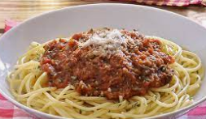

Como hacer unos fideos con salsa

Descripcion
Los fideos con salsa son una deliciosa y tradicional receta muy facil de hacer.
Ingredientes
- Fideos
- Cebolla
- Especias
- Pure de tomate
- Queso rallado
Pasos a seguir
- Ponemos a hervir en el agua los fideos
- Cortamos la cebolla en trocitos y la doramos en la sarten
- Tiramos el pure de tomate en la misma sarten en la que doramos la cebolla
- Condimentamos la salsa
- Una vez este todo listo, tiramos los fideos adentro de la sarten con la salsa
- Agregamos queso rallado al gusto
- Listo! Ya tenemos nuestros fideos